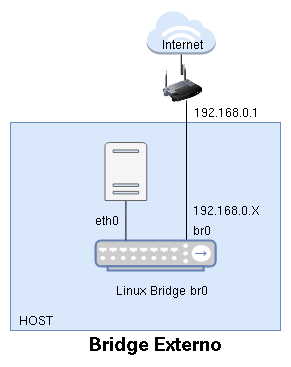

04.-Creación de un Puerte Externo con Linux Bridge
Un bridge externo es un bridge virtual que estará conectado al router de la red local. El bridge se creará en el servidor donde estamos virtualizando (host). El host estará conectado a este bridge para tener conectividad al exterior. Veamos un esquema:

- El bridge que vamos a crear lo vamos a llamar
br0. - En el host aparecerá una interfaz de red con el mismo nombre que representa la conexión al bridge. Está interfaz de red se configurará de forma estática o dinámica (si la red local tiene un servidor DHCP).
- En el ejemplo vemos que la interfaz física de red es
eth0que estará conectada abr0para que el host tenga conectividad al exterior. Esa interfaz de red no tendrá asignada dirección IP. - Posteriormente veremos como podemos conectar las máquinas virtuales a este bridge de tal manera que tomaran direcciones IP en el mismo direccionamiento que el host.
Nota: Si conectamos al bridge una interfaz de tipo wifi podemos tener problemas de conectividad. No todas las tarjetas inalámbricas permiten la conexión a puentes virtuales.
Nos aseguremos que tenemos instalado el siguiente paquete que nos permite trabajar con Linux Bridge:
apt install bridge-utils
Creación de un bridge externo con NetworkManager¶
NetworkManager es una utilidad de gráfica para simplificar el uso de redes en sistemas Linux. Normalmente la tenemos instaladas con sistemas Linux con entornos gráficos como Gnome. Junto a esa utilidad tenemos otra que se puede ejecutar con el comando nm-connection-editor, y que se llama Configuración avanzada de redes:
Si lo ejecutamos accedemos a la siguiente pantalla:
Donde vemos la conexión de red cableada (o de wifi) que tenemos y los bridge virtuales que se han creado cuando hemos estado trabajando con las redes en libvirt. Pulsando el botón +, podemos de alta nueva conexión. Añadiremos una conexión de tipo Puente:

Y podemos indicar el nombre de la conexión, el nombre del puente que estamos creando, y a continuación vamos a añadirle una conexión al bridge que será la interfaz de red física del host que está actualmente conectada al exterior.
Añadimos un conexión Cableada que será la interfaz física del host (en mi caso enp1s0):
Finalmente borramos la conexión cableada que tenemos actualmente:
Y en unos segundos, se conectará de forma automática a la conexión Puente Externo:
Comprobamos la configuración de red del host:
$ ip a
2: enp1s0: <BROADCAST,MULTICAST,UP,LOWER_UP> mtu 1500 qdisc pfifo_fast master br0 state UP group default qlen 1000
link/ether 52:54:00:22:d7:3f brd ff:ff:ff:ff:ff:ff
...
7: br0: <BROADCAST,MULTICAST,UP,LOWER_UP> mtu 1500 qdisc noqueue state UP group default qlen 1000
link/ether 92:d8:69:79:60:69 brd ff:ff:ff:ff:ff:ff
inet 192.168.121.168/24 brd 192.168.121.255 scope global dynamic noprefixroute br0
valid_lft 3459sec preferred_lft 3459sec
...
Comprobamos que la interfaz física enp1s0 no tiene dirección IP, ya que está conectada al bridge. La interfaz de red br0 representa la conexión del bridge que ha tomado una ip del servidor DHCP de la red local (esta dirección IP será diferente a la que tenía anteriormente la interfaz física).
Si tenemos instalado el paquete bridge-utils podremos ver los puentes virtuales y las interfaces que tienen conectadas, ejecutando como superusuario:
brctl show
bridge name bridge id STP enabled interfaces
br0 8000.92d869796069 yes enp1s0
virbr0 8000.525400aea33d yes
virbr1 8000.5254002daec2 yes
virbr3 8000.52540052838e yes
Creación de un bridge externo en Debian¶
Si estamos trabajando en un servidor con Linux Debian instalado y no tenemos instalado NetworkManager, la configuración se hará directamente en el fichero de configuración de red /etc/network/intefaces:
auto lo
iface lo inet loopback
auto enp1s0
iface enp1s0 inet manual
auto br0
iface br0 inet dhcp
bridge-ports enp1s0
Donde vemos como hemos configurado la interfaz física enp1s0 de tipo manual para que no tome direccionamiento. Además hemos declarado nuestro puente br0 para que tome direccionamiento de forma dinámica y hemos indicado que tendrá una interfaz conectada (bridge-ports) que será la física (enp1s0).
Finalmente, reiniciamos la red como superusuario:
ifdown enp1s0
systemctl restart networking.service
Y comprobamos:
ip a
...
2: enp1s0: <BROADCAST,MULTICAST,UP,LOWER_UP> mtu 1500 qdisc pfifo_fast master br0 state UP group default qlen 1000
link/ether 52:54:00:22:d7:3f brd ff:ff:ff:ff:ff:ff
3: br0: <BROADCAST,MULTICAST,UP,LOWER_UP> mtu 1500 qdisc noqueue state UP group default qlen 1000
link/ether 92:d8:69:79:60:69 brd ff:ff:ff:ff:ff:ff
inet 192.168.121.169/24 brd 192.168.121.255 scope global dynamic br0
valid_lft 3595sec preferred_lft 3595sec
Podemos comprobar los puentes que tenemos creados y las interfaces que están conectados a él, ejecutando la siguiente instrucción:
brctl show
bridge name bridge id STP enabled interfaces
br0 8000.7eb448933f70 no enp1s0
Creación de un bridge externo en Ubuntu¶
En Ubuntu vamos a configurar el fichero /etc/netplan/01-network-manager-all.yaml de la siguiente forma:
# Let NetworkManager manage all devices on this system
network:
version: 2
renderer: networkd
ethernets:
enp1s0:
dhcp4: no
bridges:
br0:
dhcp4: yes
interfaces:
- enp1s0
Y reiniciamos la red ejecutando:
sudo netplan apply